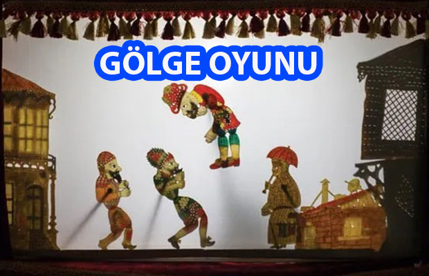
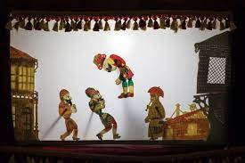

GÖLGE OYUNU VE ÖZELLİKLERİ
Gölge oyunu, geleneksel kültürümüzün en önemli köşe taşlarından biridir. Asya kökenli olduğu bilinen gölge oyununun Türk kültüründe ne zaman ve nasıl ortaya çıktığı konusunda çeşitli rivayetlere rastlıyoruz.
Gölge oyunu, ülkemize Yavuz Sultan Selim‘in 1517’deki Mısır seferi sonrası 16. yüzyılda gelmiştir. Mısır’ı fetheden Yavuz Sultan Selim’in Memlük sultanı Tomanbay’ın asılışını hayal perdesinde canlandıran bir hayal sanatçısını, oğlu Kanuni Sultan Süleyman’ın da görmesini arzu ederek İstanbul’a getirmesiyle gölge oyunu İstanbul’a gelmiştir.
Türkler 16. yüzyıl başlarında perde gerisinden gölge yansıtma tekniğini Mısır’dan almışlardır. Mısır Memluklarının gösteri yaptıkları siyah, ışık geçirmeyen, arabesk motiflerle işlemeli tasvirleri, şeffaf ve renklendirilmiş deri üzerine işleyen Türkler, bu sanata farklı bir nitelik kazandırdılar.

Mısır oyunlarının olay örgüsünün birbirinden kopuk yapısını düzenleyip yeni bir biçim verdiler. Oyun tipleri Osmanlı İmparatorluğu’nun bünyesinde barındırdığı halklar içinden ve mahalle geleneğinden seçilmiştir. Gölge oyunu Osmanlı İmparatorluğu topraklarında yayılmış, çevre ülkelerde etkili olmuş, geniş bir coğrafyaya yayılmıştır.
Gölge oyununda tasvirleri yani karakterleri oynatan kişiye Hayâlî ya da Usta denir. Bir Hayâlî’nin her şeyden önce temiz bir İstanbul Türkçesine sahip olması, taklit yeteneğinin gelişmiş olması lazımdır.
Tûluat denilen doğaçlama konuşma yetisi ve espri kabiliyeti Karagöz oyunları içinde önemli bir yer tutar. Tiyatro eğitiminde kullanılan ses tekniklerini kullanan Hayâlîler perdedeki tüm tiplerin seslerini tek başlarına konuşurlar. Hayâlî aynı zamanda Türk müziğini bilecek, tiplerin şarkılarını söyleyecek ve farklı şiveleri konuşacaktır.
Hayâlî’ye oyun sırasında “Yardak” denilen yardımcısı yardım eder. Yardak, oyun tasvirlerini perdeye giriş sırasına göre ustaya verir, def çalarak müziğe eşlik eder, oyunun efektlerini yapar.
Oyunun oynatıldığı beyaz perdeye “ayna” adı verilir. Perdeler önceleri 2 x 2,5m iken sonraları 110 x 80cm ebadında yapılmaya başlanmıştır. İç tarafta perdenin altında kurulmuş “peş tahtası” vardır. Oyunda bunun dışında zil, tef, kamış, nareke (düdük), perdeyi aydınlatacak kandil veya ampul vardır…
Tasvirler deve ya da manda derisinden uzun uğraşlarla yapılır. Önce deri kıvama getirilir. Sonra deri üzerine çizilen tasvirler ıhlamur ağacından alınmış bir kütüğün üstünde (ıhlamur ağacı önemli bir nokta kesmek kolay ve hatasız oluyormuş) kesilir ve misina ipi ile birleştirilirler. Daha sonra bu tasvirler kökboyasıyla boyanarak hazır hale getirilir.
Karagöz dört bölümden oluşuyor:
- Mukaddime (Giriş)
- Muhavere (Atışma)
- Fasıl
- Bitiş